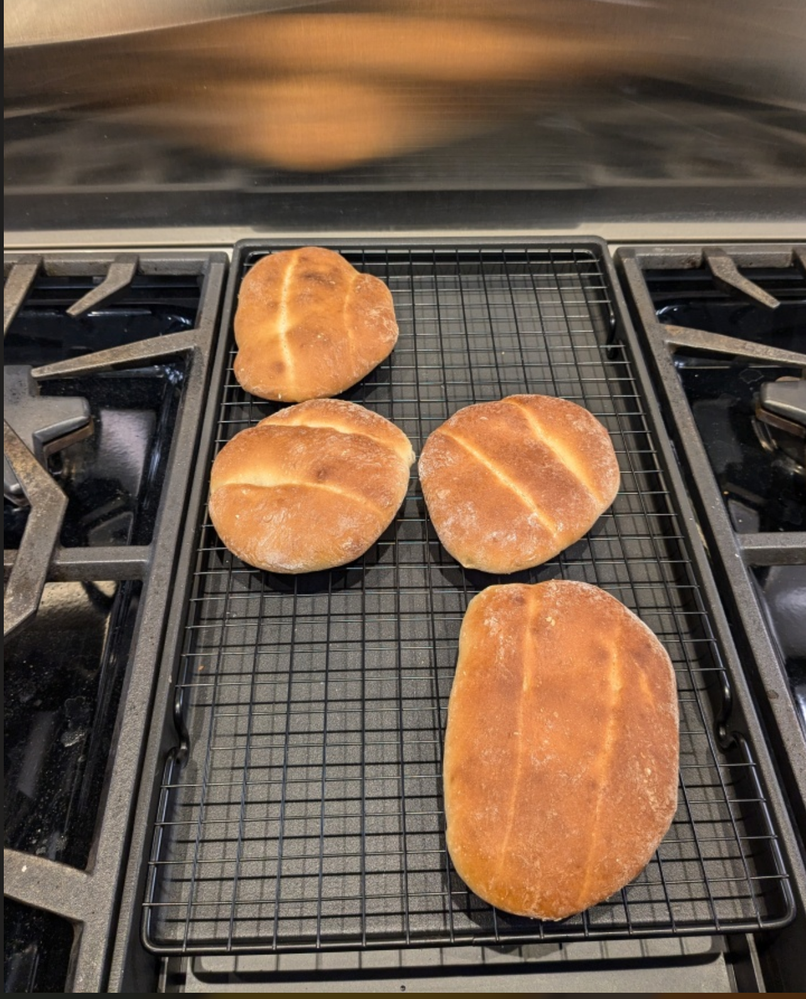

Ingredients
Directions
Chef's Notes
Baking Timeline
| Step | Direction | Time (min) | Notes |
|---|---|---|---|
| 1 | Proof yeast | 5 | In stand mixer bowl |
| 2 | Dry ingredients + fats, knead | 8 | Stand mixer |
| 3 | Remove, ball, cover, proof | 60 | Proof #1 |
| 4 | De-gas, divide (6x), shape, rest | 15 | Bench, covered |
| 5 | Flatten, shape, crease , cover, proof | 30 | Parchment-lined half-sheet |
| 6 | Spray and bake | 22 | Include bain marie (remove halfway) |